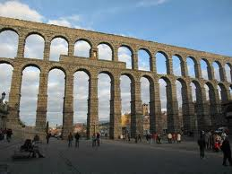

Segovia es ciudad de antigua historia. Algunas esculturas zoomorfas de tosca factura confirman
unas remotas raíces celtibéricas; el magnífico Acueducto y otros muchos vestigios de la misma
época, su integración en el imperio romano; y las necrópolis visigodas halladas en lugares
cercanos, el asentamiento de pueblos germánicos.
La ausencia de restos arqueológicos musulmanes y la existencia de uno de los más ricos conjuntos románicos de Europa apoyan la tesis de los historiadores que sostienen que la ciudad fue abandonada tras la invasión islámica y repoblada, a partir de los años finales del siglo XI, por cristianos procedentes del norte de la península y de allende los Pirineos, dirigidos por el yerno del rey Alfonso VI, Raimundo de Borgoña, y por el primer obispo de su reconstituida diócesis, el también francés Pedro de Agen.

La ausencia de restos arqueológicos musulmanes y la existencia de uno de los más ricos conjuntos románicos de Europa apoyan la tesis de los historiadores que sostienen que la ciudad fue abandonada tras la invasión islámica y repoblada, a partir de los años finales del siglo XI, por cristianos procedentes del norte de la península y de allende los Pirineos, dirigidos por el yerno del rey Alfonso VI, Raimundo de Borgoña, y por el primer obispo de su reconstituida diócesis, el también francés Pedro de Agen.